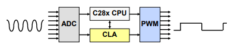
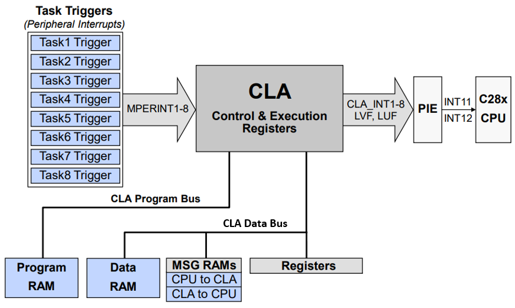
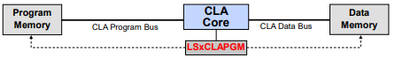
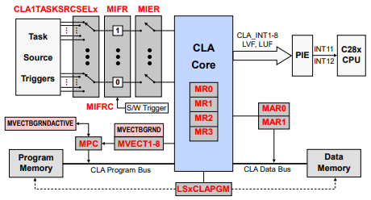
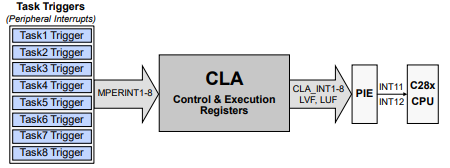
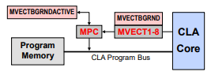
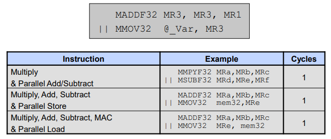

Control Law Accelerator (CLA)#
The CLA is an independent 32-bit floating-point math hardware accelerator which executes realtime control algorithms in parallel with the main C28x CPU, effectively doubling the computational performance.
CLA
Not all C2000 devices have a CLA. Refer to the Peripheral Reference Guide for a list of supported modules on your device.
With direct access to the various control and communication peripherals, the CLA minimizes latency, enables a fast trigger response, and avoids CPU overhead. Also, with direct access to the ADC results registers, the CLA is able to read the result on the same cycle that the ADC sample conversion is completed, providing “just-in-time” reading, which significantly reduces the ADC sample to output delay enabling faster system response and higher frequency operation.

The CLA responds to peripheral interrupts independently of the CPU. Utilizing the CLA for time-critical tasks frees up the CPU to perform other system, diagnostic, and communication functions concurrently. Additionally, the CLA has the capability of running a background task.
Dual Core Devices & CLA
On the F2837xD and F2838xD device families, each CPU subsystem has its own CLA that responds directly to peripheral triggers, which can free up the C28x CPU for other tasks, such as communications and diagnostics.
CLA Block Diagram#

Note:
For a full list of what peripherals/modules the CLA has access to (Peripheral register access) refer to your device’s datasheet.
CLA Memory and Register Access#
The CLA has access to the LSx RAM blocks and each memory block can be configured to be either dedicated to the CPU or shared between the CPU and CLA. After reset the memory block is mapped to the CPU, where it can be initialized by the CPU before being shared with the CLA. Once it is shared between the CPU and CLA it then can be configured to be either program memory or data memory. When configured as program memory it contains the CLA program code, and when configured as data memory it contains the variable and coefficients that are used by the CLA program code. Additionally, dedicated message RAMs are used to pass data from CPU to CLA and CLA to CPU.
CLA Program Memory [Program RAM: LS RAM]
Contains CLA program code
Mapped to the CPU at reset
Initialized by the CPU
CLA Data Memory [Data RAM: LS RAM]
Contains variables and coefficients used by the CLA program code
Mapped to the CPU at reset
Initialized by CPU
Message RAMs [MSG RAMs: CPU to CLA/ CLA to CPU]
Used to pass data between the CPU and CLA
Always mapped to both the CPU and CLA
Peripheral Register Access [PF]
Provides direct access to peripherals
CLA Memory Configuration#

Set the LSx memory RAM configuration (CPU only or CPU and CLA)
// Function inputs:
// ramSection parameter value is: MEMCFG_SECT_LSx
// controllerSel value is RAM section dedicated to the CPU
// or shared between the CPU and the CLA:
// MEMCFG_LSRAMONTROLLER_CPU_ONLY
// MEMCFG_LSRAMCONTROLLER_CPU_CLA1
MemCfg_setLSRAMControllerSel(ramSection, controllerSel);
Set the CLA memory RAM configuration type (LSx = Data or Program)
// Function inputs:
// ramSections parameter value is: MEMCFG_SECT_LSx
// claMemType value is RAM section is configured as CLA
// data memory or CLA program memory:
// MEMCFG_CLA_MEM_DATA or MEMCFG_CLA_MEM_PROGRAM
MemCfg_setCLAMemType(ramSections, claMemType);
CLA Control and Execution Registers#

Note:
The blocks in pink, MVECTBGRNDACTIVE: Saves return address and MVECTBGRND:
Background Task Vector, are only applicable to devices with a Type 2 CLA.
CLA1TASKSRCSELx – Task Interrupt Source Select (Task 1-8)
MVECT1-8 – Task Interrupt Vector (MVECT1/2/3/4/5/6/7/8)
LSxCLAPGM – Memory Map Configuration (LS0 – LSX RAM)
MPC – 16-bit Program Counter (initialized by appropriate MVECTx register)
MR0-3 – CLA Floating-Point Result Registers (32 bit)
MAR0-1 – CLA Auxiliary Registers (16 bit)
CLA Tasks#
Programming the CLA consists of initialization code, which is performed by the CPU, and tasks. A task is similar to an interrupt service routine, and once started it runs to completion. Each task is capable of being triggered by a variety of peripherals without CPU intervention, which makes the CLA very efficient since it does not use interrupts for hardware synchronization, nor must the CLA do any context switching. Unlike the traditional interrupt-based scheme, the CLA approach becomes deterministic. The CLA supports eight independent tasks and each is mapped back to an event trigger. Also, the CLA is capable of running a continuous background task. Since the CLA is a software programmable accelerator, it is very flexible and can be modified for different applications.

A task is similar to an interrupt service routine
CLA supports 8 tasks (Task1-8)
A task is started by a peripheral interrupt trigger (triggers are enabled in the
CLA1TASKSRCSELxregister)When a trigger occurs the CLA begins execution at the associated task vector entry (MVECT1-8)
Once a task begins it runs to completion (no nesting)
Capable of running a continuous background task
CLA Task C Programming#
Supports C only (no C++ or GCC extension support)
Different data type sizes than C28x CPU and FPU
CLA Architecture is designed for 32-bit data types
16-bit computations incur overhead for sign-extension
16-bit values mostly used to read/write 16-bit peripheral registers
There is no SW or HW support for 64-bit integer or floating point
Data Type Sizes
Type | CPU and FPU | CLA
-------------|-----------------------
char | 16 bit | 16 bit
short | 16 bit | 16 bit
int | 16 bit | 32 bit
long | 32 bit | 32 bit
long long | 64 bit | 32 bit
float | 32 bit | 32 bit
double | 32 bit | 32 bit
long double | 64 bit | 32 bit
pointers | 32 bit | 16 bit
CLA Task C Code Example#
// From ClaTasks_C.cla: A .cla extension to the file causes the
// C2000 compiler to invoke the CLA compiler
interrupt void Cla1Task1 (void)
{
_mdebugstop1();
xDelay[0] = (float32_t)AdcaResultRegs.ADCRESULT0;
Y = coeffs[4] * xDelay[4];
xDelay[4] = xDelay[3];
xDelay[3] = xDelay[2];
xDelay[2] = xDelay[1];
xDelay[1] = xDelay[0];
Y = Y + coeffs[0] * xDelay[0];
ClaFilteredOutput = (uint16_t)Y;
}
CLA Task C Language Restrictions#
No initialization support for global and static local variables
int16_t x; // valid
int16_t x=5; // not valid
Initialized global variables should be declared in a .c file instead of the .cla file
.c file: .cla file:
int16_t x=5; extern int16_t x;
For initialized static variables, easiest solution is to use an initialized global variable instead
No recursive function calls
No function pointers
No support for certain fundamental math operations
integer division: z = x/y;
modulus (remainder): z = x%y;
unsigned 32-bit integer compares
No standard C math library functions, but TI provides some function examples.
CLA Background Task#
Note:
Background Tasks can only be implemented with devices that have a Type 2 CLA.
MVECTBGRNDregister contains the background task vectorBranch return address is saved to
MVECTBGRNDACTIVEregister (address gets popped to the MPC when execution returns)

Option to run 8 tasks or 7 tasks and 1 background task
Task 8 can be set to be the background task (while Tasks 1-7 service peripheral triggers in the foreground)
Runs continuously until disabled or device/soft reset
Can be triggered by a peripheral or software
Tasks 1 - 7 can interrupt background task in priority order (Task 1 is highest, Task 7 is lowest)
Can make portions of background task uninterruptible, if needed
Background task useful for continuous functions such as communications and clean-up routines
Background Task Interrupts:#
By default background tasks are interruptible
Highest priority pending task executes first
When task completes, and there is no other pending interrupt, execution returns to the background task
Sections of background task can be made uninterruptible
Using compiler intrinsics:
__disable_interrupts(); // MSETC BGINTM
__enable_interrupts(); // MCLRC BGINTM
// Task 8 - Background Task - Example for a background task
__attribute__((interrupt("background"))) void Cla1Task8 ( void )
{
//
// Code below is interruptible
//
CODE GOES HERE...
//
// Make this portion un-interruptible //
__disable_interrupts();
CODE GOES HERE...
__enable_interrupts();
//
// Code below is interruptible
//
CODE GOES HERE...
}
CLA Initialization#
CLA initialization is performed by the CPU during software initialization.
Copy CLA task code from flash to CLA program RAM
Initialize CLA data RAMs, as needed
Populate with data coefficients, constants, etc.
Configure the CLA registers
Enable the CLA clock (SysCtl_enablePeripheral(SYSCTL_PERIPH_CLK_CLA1);)
Populate the CLA task interrupt (MVECT1-8 registers)
Select the desired task interrupt sources (CLA1TASKSRCSELx registers)
If desired, enable IACK instruction to start tasks using software
Map CLA program RAM and data RAMs to CLA space
Configure desired CLA task completion interrupts in the PIE
Enable CLA task triggers in the MIER register
Initialize the desired peripherals to trigger the CLA tasks
Note:
Data can be passed between the CLA and CPU via message RAMs or allocated CLA Data RAM
CLA Initialization Code Example#
// The cla.h file defines data types and
// special registers specific to the CLA
#include "driverlib.h" //cla.h
// Defines register bit field structures
#include "device.h"
// CLA task functions are predefined
extern interrupt void Cla1Task1();
extern interrupt void Cla1Task2();
extern interrupt void Cla1Task8();
// Initialize CLA task interrupt vectors
CLA_mapTaskVector(CLA1_BASE, CLA_MVECT_1, (uint16_t)&Cla1Task1);
CLA_mapTaskVector(CLA1_BASE, CLA_MVECT_2, (uint16_t)&Cla1Task2);
:
CLA_mapTaskVector(CLA1_BASE, CLA_MVECT_7, (uint16_t)&Cla1Task7);
CLA_mapTaskVector(CLA1_BASE, CLA_MVECT_8, (uint16_t)&Cla1Task8);
Enabling CLA support in CCS#
Within the properties menu of a project go to Build→C2000
Compiler →Processor Options. Inside the processor options, confirm
that cla2 is chosen.
When creating a new CCS project, choosing a device variant that has the CLA will automatically select this option, so normally no user action is required.
C2000Ware - CLA Software Support#
TI provides some examples of floating-point math CLA functions Go to TI Resource Explorer→C2000Ware-version→Language→Libraries →CLAmath →Examples
CLA Compiler Scratchpad Memory Area#
For local and compiler generated temporary variables
Static allocation, used instead of a stack
Defined in the linker command file
MEMORY
{
...
}
SECTIONS
{
...
/***CLA Compiler Required Sections***/
.scratchpad : > RAMLS0, PAGE = 1
...
}
lab.cmd
# CLA Assembly Language Implementation
Note:
For a complete list of CLA assembly instructions refer to the device technical reference manual (TRM)
The CLA has the same instruction format as the CPU and FPU and the same mnemonics as FPU, with a leading “M”
Destination operand on the left
Source operand(s) on the right
Example below:
CPU: MPY ACC, T, loc16
FPU: MPYF32 ROH, R1H, R2H
CLA: MMPYF32 MR0, MR1, MR2
CLA Assembly Parallel Instructions#
Parallel instructions are ‘built-in’ and not free form, meaning you cannot just combine two regular instructions. They operate as a single instruction with a single opcode, and perform two operations in one cycle. A parallel instruction is recognized by its parallel bars.
Example: Add + Parallel Store

CLA Assembly Addressing Modes#
The CLA has two addressing modes: Direct and Indirect
Direct: Populates opcode field with 16-bit address of the variable
Indirect: Uses the address in MAR0 or MAR1 to access memory; after the read or write MAR0/MAR1 is incremented by a 16-bit signed value
example 1: NMOV32 MR0, *MAR0[2]++
example 2: NMOV32 MR1, *MAR1[-2]++
Both modes can access the lower 64Kx16 of memory only:
All of the CLA data space
Both message RAMs
Shared peripheral registers
CLA Code Debugging#
The CLA and CPU are debugged from the same JTAG port
You can halt, single-step, and run the CLA independent of the CPU
Insert a breakpoint in the CLA code
Insert a
MDEBUGSTOP1instruction(s) in the code where desired then rebuild/reloadIn C code, can use (“MDEBUGSTOP1”)
When the debugger is not connected, the
MDEBUGSTOP1acts like an MNOP
Connect to the CLA target in CCS
This enables CLA breakpoints
Run the CPU target
CLA task will trigger (via peripheral interrupt or software)
CLA executes instructions until
MDEBUGSTOP1is hit
Load the code symbols into the CLA context in CCS
This allows source-level debug
Needs to be done only once per debug session unless the .out file changes
Debug the CLA code
Can single-step the code, or run to the next
MDEBUGSTOP1or to the end of the taskIf another task is pending, it will start at the end of the previous task
Disconnect the CLA target to disable CLA breakpoints, if desired
Note:
When using the legacy MDEBUGSTOP instruction, a CLA single step executes one
pipeline cycle, whereas a CPU single step executes one instruction (and flushes
the pipeline); see TRM for details
Resources#
Feedback
Please provide any feedback you may have about the content within C2000 Academy to: c2000_academy_feedback@list.ti.com